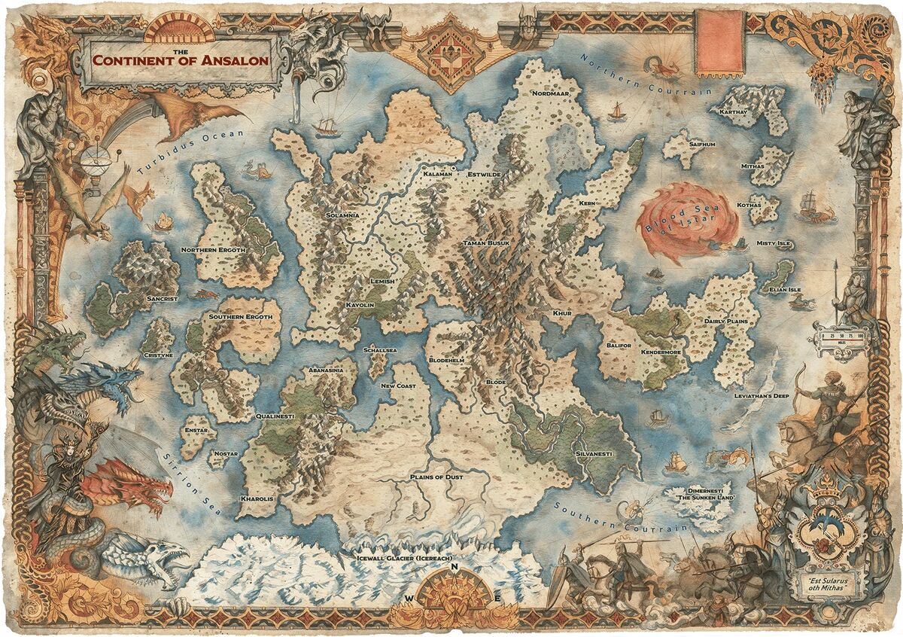

As Terras de Ansalon
O Cataclismo remodelou as faces de Krynn, afundando impérios, secando oceanos e separando continentes. O mundo moderno é uma colcha de retalhos de nações sobreviventes, reinos decadentes e terras indomáveis.
Neste compêndio geográfico, você encontrará os registros detalhados das principais regiões de Ansalon que formam o palco central da nossa campanha, suas culturas e os perigos que espreitam em suas fronteiras.

Mapa Continental de Ansalon durante a Guerra da Lança (Clique para ampliar)
Solamnia
Outrora um reino poderoso, Solamnia decaiu da glória que um dia conheceu, mas continua sendo o bastião da humanidade. É uma terra de vastas planícies, cidades fortificadas e tradições profundas. Protegida pelas três grandes ordens dos Cavaleiros de Solamnia, a nação agora se prepara para as sombras da guerra que se aproximam do leste.
Localidades Específicas
Palanthas
A joia de Solamnia. Uma metrópole intocada pelo Cataclismo, lar de bibliotecas imensas, comércio pulsante e o coração político das famílias nobres. Suas muralhas brancas são consideradas impenetráveis.
Kalaman
Uma poderosa cidade costeira e fortaleza estratégica vital. Seu porto fortificado a torna um dos principais pontos de defesa de Solamnia contra incursões marítimas do leste.
Vila de Vogler
Uma pequena e pacata vila de pescadores às margens de um rio. Famosa por seu festival local e pela hospitalidade de seu povo, é frequentemente ignorada pelos mapas bélicos dos generais, tornando-a um refúgio ou um alvo fácil.
↑ Voltar ao Índice
Nordmaar
O extremo norte do continente é uma terra brutal, dividida entre litorais escarpados, picos congelados e sistemas de cavernas abissais. O povo da superfície de Nordmaar é tão duro quanto as pedras em que vivem, governado pela força, enquanto seus subterrâneos escondem segredos perigosos e civilizações exiladas.
Localidades Específicas
Cãnato de Zagg
Uma massiva tribo nômade que varre as estepes e picos de Nordmaar, comandada por um Khan implacável. Eles vivem no lombo de suas montarias e desprezam aqueles que se escondem atrás de muralhas de pedra.
Acampamento dos Nordmen
Ao norte mais extremo habitam os Nordmen, uma tribo de homens fortes e gelados composta exclusivamente por gigantescos Golias. Eles desbravaram o gelo, cultuam a força bruta, realizam incursões navais temíveis e trazem consigo relíquias glaciais.
Toca Obscura
O último e maior reduto Drow ao norte de Ansalon. Expulsos das fronteiras de Solamnia pelo terrível evento d'As Chamas de Crindrael, os Drows refugiaram-se na Nordmaar subterrânea. Esculpida em obsidiana e iluminada por líquens púrpuras, a cidade é governada por Matronas implacáveis, sendo um antro de traições, magias obscuras e ódio ancestral pelos elfos da superfície, onde tramam silenciosamente a retomada de Krynn.
↑ Voltar ao Índice
Terras ao Sul
As antigas florestas, ilhas enevoadas e redutos sagrados que formam os domínios ao sul de Ansalon. Estas terras são povoadas por raças que valorizam a magia, a profunda conexão com a natureza e o isolacionismo. De cidades élficas milenares a calabouços redentores, é um território de extrema beleza e segredos ancestrais.
Localidades Específicas
Qualinesti
Há muito tempo, um grupo de altos elfos deixou Silvanesti em busca de uma sociedade mais igualitária. Eles viajaram para o extremo oeste e fundaram uma nova pátria florestal chamada Qualinesti. Menos hierárquicos que seus progenitores e mais dispostos a lidar com forasteiros, os elfos de Qualinesti chegaram até a desfrutar de boas relações com os anões de Thorbardin. Desde o Cataclismo, no entanto, eles se isolaram do mundo, e poucos forasteiros ousam se aproximar de suas fronteiras rigorosamente vigiadas.
Silvanesti
Silvanesti, o reino élfico original, fica no sul de Ansalon. Por incontáveis gerações, os distantes elfos de Silvanesti viveram em uma sociedade estratificada e fechada para forasteiros. Eles não odeiam seus primos de Qualinesti, mas consideram os costumes deles equivocados.
Nos últimos anos, a guerra chegou a Silvanesti. Quando os Exércitos Draconianos sitiaram o reino, o líder Lorac Caladon, o Orador das Estrelas, ordenou que seu povo evacuasse. Lorac tentou, então, defender o reino usando um orbe dos dragões — mas a magia do artefato distorceu inesperadamente Silvanesti, transformando a região em uma terra de pesadelos.
Os elfos sobreviventes de Silvanesti agora se encontram como um povo sem pátria. A maioria viajou junta pelo mar até Ergoth do Sul em busca de refúgio com os Kagonesti, enquanto outros se recusaram a desistir de Silvanesti e buscam recuperar seu lar ancestral.
Isla Kharnash
Um refúgio majestoso envolto por névoas protetoras, ostentando dramáticas montanhas escarpadas e planícies cobertas de grama dourada. Conhecida como a "Terra dos Eternos", a ilha é o local sagrado dos bravos guerreiros Leoninos, abrigando estátuas monumentais e o sublime Santuário de Arlion, dedicado ao Primeiro Rei.
Apesar da profunda sabedoria de líderes como Leonel e da vigília dos espíritos estelares, a ilha de beleza indomável acabou caindo perante as forças esmagadoras do Exército do Dragão Vermelho, encontrando-se desde então sob a posse brutal da deusa Takhisis.
Cidade Iluminada
Escondida ao sul, perto da Nova Costa, nas profundezas do calabouço místico de Nodmar. Nascida do desejo de redenção de um grupo dissidente de Drows de 4 Folhas, esta joia rara é um bastião de paz onde Drows, Altos Elfos e Meio-Elfos convivem em perfeita cooperação. Em total oposição à crueldade de seus ancestrais, a cidade dedica-se à igualdade, à esperança e ao uso das artes místicas puramente para o bem comum.
↑ Voltar ao Índice
Nightlund
Onde antes ficava o próspero e independente reino de Knightlund, agora repousa um território consumido por neblina eterna e desespero. Amaldiçoada pelos pecados de seu governante durante os eventos que antecederam o Cataclismo, Nightlund é uma terra onde os mortos não encontram paz e as trevas nunca se dissipam por completo.
Localidades Específicas
Castelo de Lorde Soth
A fortaleza distorcida do Cavaleiro da Rosa Negra. Ergue-se como um monólito de pesadelo através do nevoeiro. Seus salões ecoam com a loucura de seu mestre e são guardados por guardas esqueléticos e espectros lamuriosos.
Cemitério dos Mil Corpos
Um campo de batalha do passado maculado pela magia necromântica. Tumbas expostas e cruzes retorcidas marcam o local onde exércitos inteiros foram enterrados em valas comuns. A energia de morte ali é tão densa que levanta zumbis espontaneamente.
↑ Voltar ao Índice
Eastwild
As perigosas fronteiras leste. Eastwild é um caldeirão caótico de estepes rochosas, tribos bárbaras e criaturas monstruosas que prosperam longe dos códigos da cavalaria e das leis dos reinos consolidados. Para viajar por estas terras, deve-se ter uma espada na mão e os olhos nas costas.
Localidades Específicas
Território da Tribo Drugga
Os domínios sangrentos da Tribo Drugga, um grupo feroz de orcs selvagens de proporções massivas. A cada 40 anos, como um relógio de puro terror, a tribo realiza uma incursão brutal contra as fronteiras de Solamnia em busca de cabeças, glória e espólios.
↑ Voltar ao Índice